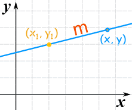
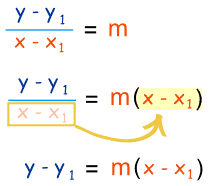
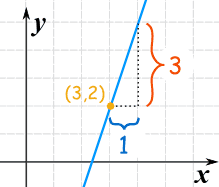

Point-Slope Equation of a Line
The "point-slope" form of the equation of a straight line is:
y − y1 = m(x − x1)
The equation is useful when we know:
and want to find other points on the line.
Have a play with it first (move the point, try different slopes):
Now let's discover more.
What does it stand for?

(x1, y1) is a known point
m is the slope of the line
(x, y) is any other point on the line
Making sense of it
It is based on the slope:

Slope m = change in y change in x = y − y1 x − x1
Starting with the slope: we rearrange it like this:
to get this: |
 |
So, it is just the slope formula in a different way!
Now let us see how to use it.
Example 1:

slope "m" = 31 = 3
y − y1 = m(x − x1)
We know m, and also know that (x1, y1) = (3,2), and so we have:
y − 2 = 3(x − 3)
That is a perfectly good answer, but we can simplify it a little:
y − 2 = 3x − 9
y = 3x − 9 + 2
y = 3x − 7
Example 2:

m = −3 1 = −3
y − y1 = m(x − x1)
We can pick any point for (x1, y1), so let's choose (0,0), and we have:
y − 0 = −3(x − 0)
Which can be simplified to:
y = −3x
Example 3: Vertical Line
 |
What is the equation for a vertical line?
The slope is undefined!
In fact, this is a special case, and we use a different equation, like this:
x = 1.5
Every point on the line has x coordinate 1.5,
that’s why its equation is x = 1.5
What About y = mx + b ?
You may already be familiar with the "y=mx+b" form (called the slope-intercept form of the equation of a line).
It is the same equation, in a different form!
The "b" value (called the y-intercept) is where the line crosses the y-axis.
So point (x1, y1) is actually at (0, b)
and the equation becomes: